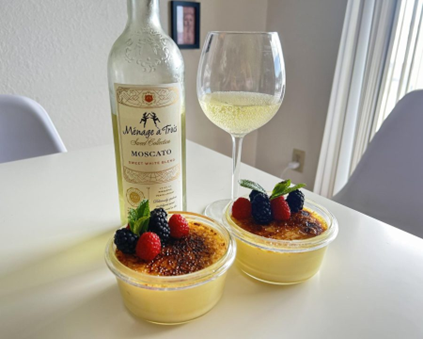
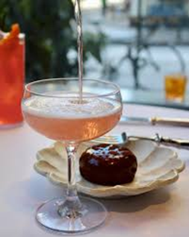
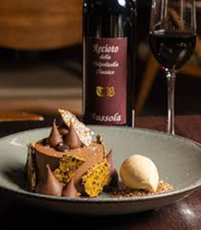
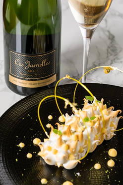
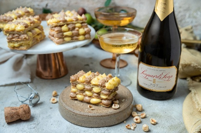
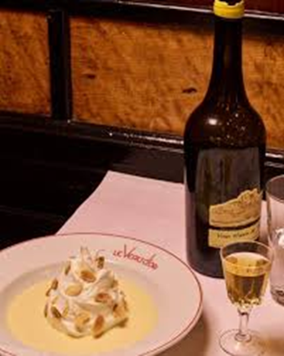
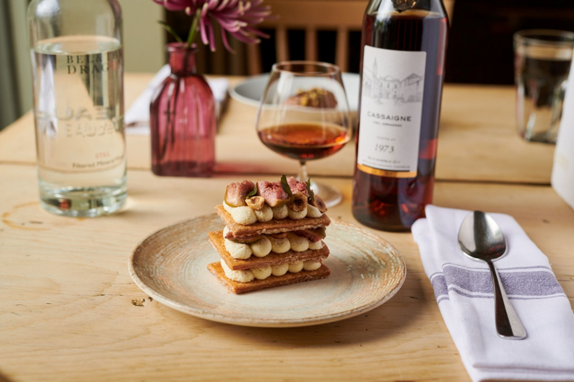
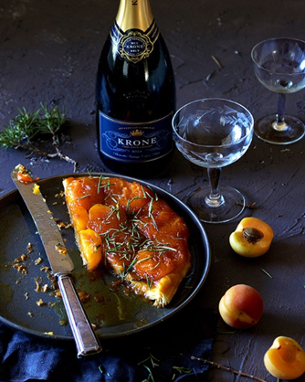

Accords desserts et vins
Le cœur de la France, connu pour ses plats raffinés, classiques français et ses délices de boulangerie emblématiques.

Crème
Brûlée
Accord
Mets & Vin : Sauternes (ou un autre vin blanc liquoreux de Bordeaux)
La croûte caramélisée et la
crème onctueuse s’harmonisent parfaitement avec les notes miellées et d’abricot
du Sauternes.

Tarte aux Fraises
Accord
Mets & Vin : Champagne
Rosé
La fraîcheur de la tarte et les
fruits rouges s’accordent merveilleusement avec les bulles et les arômes
fruités du champagne rosé.

Mousse au
Chocolat
Accord
Mets & Vin : Maury ou Banyuls (vins rouges doux naturels du Sud de la France)
Ces vins soulignent la richesse
du chocolat noir sans l’écraser.

Tarte au Citron
Accord
Mets & Vin : Riesling
Vendanges Tardives ou Vouvray Moelleux
Un vin blanc doux et acide
équilibre l’acidité du citron avec élégance.

Poire Belle Hélène
Accord
Mets & Vin : Gewürztraminer ou Muscat
Les arômes floraux et fruités de
ces vins mettent en valeur la poire et la vanille.

Île Flottante
Accord
Mets & Vin : Monbazillac
Ce dessert aérien sur lit de
crème anglaise s’accorde très bien avec un vin doux comme le Monbazillac,
similaire au Sauternes mais plus accessible.

Mille-Feuille
Accord
Mets & Vin : Champagne ou Crémant Les bulles apportent de la légèreté et tranchent
avec la richesse de la crème pâtissière et de la pâte feuilletée.

Tarte Tatin
Accord
Mets & Vin : Cidre
Doux ou Calvados
Pour rester dans le thème de la
pomme : le cidre doux accompagne à merveille la tarte, tandis que le
Calvados ajoute une profondeur chaleureuse.